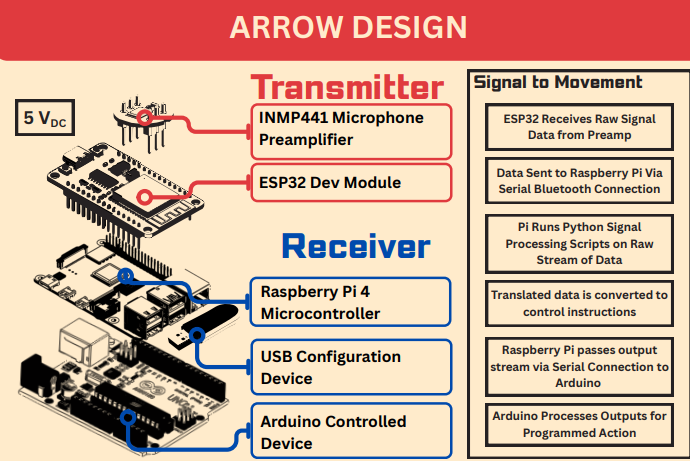

MULTI-FREQUENCY BASED CONTROLLER · HARDWARE EDITION
A configurable system that translates complex audio cues in the audible range into independent output instructions — for sensing and control. This is the complete recipe for the physical device Team Yondu demoed at the UMD Capstone Design Expo: a rover you drive by striking notes on a tongue drum, and a decision layer you can remap to control almost anything that listens to serial.
The device splits into two halves. The transmitter (“the fin”) is worn or held near the sound source: an INMP441 I2S microphone feeding an ESP32 that streams raw audio over Bluetooth. The receiver rides on the rover: a Raspberry Pi 4 that FFTs the stream, matches frequency peaks against a JSON configuration, and serial-commands an Arduino UNO driving the motors. Hit-to-wheel latency lands under 200 ms.

The signal-processing pipeline on the Pi, in order: 1. convert the raw I2S stream to dB SPL · 2. band-pass filter to the instrument's range (~20 Hz–1 kHz for the drum) · 3. subtract the RMS-estimated noise floor · 4. FFT to isolate frequency peaks · 5. group peaks within ~5 Hz / 5 dB to cut processing overhead · then map surviving peaks to output codes from the configuration file.
| Qty | Part | Role |
|---|---|---|
| 1 | Lafvin 2WD Robotic Kit | Chassis, 2 DC gear motors + rear caster, motor driver |
| 1 | Raspberry Pi 4 | Signal processing & decision logic |
| 1 | ESP32 DEV Module | Audio acquisition & Bluetooth transmission |
| 1 | INMP441 I2S microphone | Raw audio capture |
| 1 | Arduino UNO | Motor actuation |
| 2 | 5 V / 2 A USB battery pack | One for the Pi + Arduino stack, one for the transmitter |
| 1 | Prototyping board | Solid, replaceable INMP441 ↔ ESP32 mounting |
| 1 | USB flash drive | Carries config.json — remap behavior without touching the Pi |
| — | Hookup wire + solder | Short, soldered runs (see §07) |
| 1 | Tongue drum (or any tonal instrument) | The controller |
| INMP441 pin | ESP32 pin |
|---|---|
| SCK — serial clock | GPIO 32 |
| WS — word select | GPIO 25 |
| SD — serial data | GPIO 33 |
| L/R — channel select | GND (left) |
| VDD | 3V3 |
| GND | GND |
| Signal | Pin |
|---|---|
Left motor PWM (Lpwm_pin) | 5 |
Right motor PWM (Rpwm_pin) | 6 |
Left forward / backward (pinLF / pinLB) | 2 / 4 |
Right forward / backward (pinRF / pinRB) | 7 / 8 |
| Link | Transport |
|---|---|
| ESP32 → Raspberry Pi | Bluetooth serial · /dev/rfcomm0 · 115200 baud |
| Raspberry Pi → Arduino | USB serial · /dev/ttyUSB0 · 9600 baud |
| Config flash drive → Pi | USB |
Flash hardware/esp32/yondu_mic_tx.ino
from the Arduino IDE (board: ESP32 Dev Module). It reads
512-sample I2S buffers at 48 kHz/32-bit and streams every sample as
a text line over Bluetooth serial, advertising as
ESP32_Yondu. The I2S mic bring-up follows atomic14's
esp32-i2s-mic-test.
Flash hardware/arduino/yondu_rover.ino
(board: Arduino UNO). Engineering-standards notes from the
paper: all pins are declared with #define/const
(no dynamic allocation), setup() calls the stop routine
first so the rover stays put during initialization, and direction pins
default LOW so a brown-out can't twitch the wheels. Commands are
newline-terminated strings:
| Code | Action | PWM |
|---|---|---|
A | Drive forward | 128 |
B | Drive backward | 128 |
C | Pivot right | 100 |
D | Pivot left | 128 |
0 | Stop | 0 |
# dependencies
sudo apt update && sudo apt install python3-numpy python3-serial bluez
# pair with the transmitter (once)
bluetoothctl
scan on # note ESP32_Yondu's MAC
pair <MAC>
trust <MAC>
quit
# bind the Bluetooth serial port (each boot, or via systemd)
sudo rfcomm bind /dev/rfcomm0 <MAC>
# drop in a config and run
cp config.example.json config.json
python3 signal_processor.py
signal_processor.py buffers 1024-sample windows, applies a
Hanning window + FFT, converts magnitudes to dB, and checks every
configured peak: frequency within sensitivity Hz and
amplitude above threshold → its output_code is sent to
the Arduino. No peak matched → 0 (stop).
The decision layer is entirely configuration-driven — this is what turns a drum-driven rover into a general audio control system. The Pi never hardcodes a note: it reads a JSON file (from the USB stick) mapping frequency bands to arbitrary output codes.
Run the processor with the env_scan config: instead of
driving, it prints the top-20 FFT peaks it hears. Strike each note
repeatedly, at different angles and intensities, and log which
frequencies recur and how much they vary.
{ "config_name": "env_scan", "Global_Sensitivity": 10.0,
"Global_Amplitude": 65.0, "Peaks": {} }Choose notes whose measured bands don't overlap (the team's phase-3 testing established confidence intervals per drum pad and kept the four most stable, distinguishable ones). Adjacent or harmonically related notes will cross-trigger — see §07.
{
"config_name": "tongue_drum_expo",
"Global_Sensitivity": 10.0, // default ± Hz tolerance
"Global_Amplitude": 65.0, // dB threshold — raise in loud rooms
"Peaks": {
"Peak1": { "frequency": 440.00, "sensitivity": 5.0, "output_code": "A" },
"Peak2": { "frequency": 523.25, "sensitivity": 5.0, "output_code": "B" },
"Peak3": { "frequency": 587.33, "sensitivity": 5.0, "output_code": "C" },
"Peak4": { "frequency": 659.25, "sensitivity": 5.0, "output_code": "D" }
}
}The output codes are just bytes on a serial line. Point them at anything: the paper's application studies included smart homes (tone-triggered lights, appliances, locks), industrial monitoring (self-disengage when frequencies associated with mechanical failure appear — here the "instrument" is the machine itself), and interactive exhibits (visitors trigger displays with musical notes). Swap the Arduino sketch's motor routines for whatever your actuator needs; the acquisition and decision layers don't change.
Discrete notes (§05) are one map. The simulator demonstrates the other: pitch-style continuous control, where the controller calibrates to your whistle and reads where your pitch sits inside your own range — hold your center note to go, slide high to turn one way, low to turn the other, go quiet to stop. You can run that same scheme on this hardware without touching a line of code.
The whistle print you download from the simulator doesn't store three narrow notes — its bands tile your entire calibrated range, split at the same dead-zone boundaries the sim's gesture classifier uses (±22% of your range in log-frequency, around your center). Any whistle inside your range therefore always lands in exactly one band:
| You whistle… | Band | Code | Rover | Sim arrow |
|---|---|---|---|---|
| near your center note | Hold | A | drive forward | thrust |
| above the dead zone | PitchUp | C | pivot right | bank right |
| below the dead zone | PitchDown | D | pivot left | bank left |
| …nothing (silence) | — | 0 | stop | coast |
config.json, drop it on the rover's USB
config stick, and start signal_processor.py (§04).Global_Amplitude so breaths and chatter stay below the
gate.
signal_processor.py can scale an extra
PWM byte from the detected peak's amplitude and pass it alongside the
code.
University of Maryland, College Park · Department of Electrical and
Computer Engineering
ENEE 408J Capstone · Spring 2025 · Advised by Professor Brian Beaudoin
Rajit Mukhopadhyay · Shaurya Agarwal · Nathan Fireman · Owen Mank · Jamil Takieddine